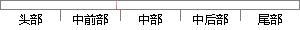

Google Chrome是一款由Google公司开发的网页浏览器，该浏览器基于其他开源软件撰写，包括WebKit，目标是提升稳定性、速度和安全性，并创造出简单且有效率的使用者界面。
片段位置图

相似结果|
相似片段 1：、操作简单等特点。Chrome 是 Google 公司开发的网页浏览器。该浏览器是基于其他开放原始码软件所撰写，包括 WebKit 和 Mozilla，目标是提升稳定性、速度和安全性，并创造出简单且有效率的使用者界面。
相似片段 2：GoogleChrom ，即Google浏览器，是一个由Google公司开发的开源网页浏览器。该浏览器是基于其他开源软件所撰写，包括WebKit和Mozilla，目标是提升稳定性、速度和安全性
相似片段 3：浏览器是基于开源软件所撰写，包括 WebKit，目标是提升稳定性、速度和安全性，并创造出简单且有效率的使用者界面。图 4.13（a)为用户登入界面用于实现用户通过账号和密码登入系统中，图 4.13（b）为
相似片段 4：并开放源代码，开源计划名为 Chromium.本软件的代码是基于其他开放源代码软件所撰写，包括Weskit和Mozilla，目标是提升稳定性、速度和安全性，并创造出简单且有效的使用者界面。软件的名称是来自于又称作“Chrome”的网络浏览器图形使用者界面（GUI）。
|
※ 片段修改建议 ※
近似词参考：- google：谷歌
- google：谷歌
- 开发：开辟
- 包括：包罗 包孕 包含 囊括
- 目标：方针 目的
- 提升：晋升 提拔
- 速度：速率
- 简单：简略 简朴
系统自动生成语句：Google Chrome是一款由Google公司开辟的网页浏览器，该浏览器基于其他开源软件撰写，包罗WebKit，方针是晋升稳定性、速率和安全性，并创造出简略且有效率的使用者界面。
注：本片段修改建议为系统自动生成，仅供参考。